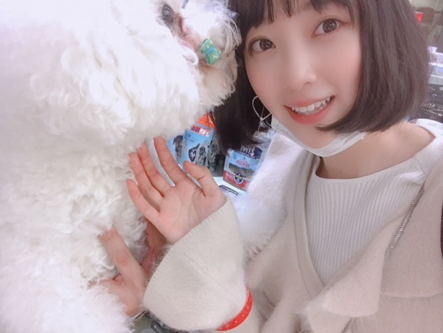

2018/1120Tueふらっと。
なんでもない日に友達や家族に
プレゼントを渡すのが好き。
分かりますか？
ぶらぶらお買い物をしていて、
あ、これ似合いそうだなとか
欲しがってたなとか思うと
なんでもない日なのについ真剣に選んでしまいます笑
旅行先でのお土産選びも大好き☺︎

でも喜んでくれる顔を想像して
相手のことを考えて
プレゼントを選んでいる時間は私も幸せだし
好きだなーって思う
サプライズが基本好きです☺︎


たまたま会った
ビションフリーゼが
かわいくってかわいくってたまりません！

ん〜飼いたい〜
ニコルとプティが嫉妬しそうだけど。笑
でもふたりには犬用おせちを予約したから
お正月喜んでくれるといいな♡

質問返し、次のブログでしようかな？
質問募集します
寒いので風邪ひかないように。。
では
2018/11/20 20:36
コメント(1390)
ブログ更新ありがとう‼☆☆☆
未央奈の独特な雰囲気とか，ふわっとした可愛さが魅力だな～～と改めて思うこの頃。。
未央奈も
体調には気を付けてください‼
インフルエンザも流行りだしたとか、、泣
寒さが日に日にますのはつらい～～‼
これからも応援しています！
おやすみおな☆☆☆
未央奈の独特な雰囲気とか，ふわっとした可愛さが魅力だな～～と改めて思うこの頃。。
未央奈も
体調には気を付けてください‼
インフルエンザも流行りだしたとか、、泣
寒さが日に日にますのはつらい～～‼
これからも応援しています！
おやすみおな☆☆☆
好きです。一番好きなK-POPアイドルは？
未央奈～～更新ありがとう。
サプライズプレゼント？かな良いね相手の事を考えて選ぶプレゼント！
犬用のおせちあるんだね。僕も犬いるから買って行こうかなあんまり日頃の感謝とか言えていないからいいかも！いい情報ありがとう
未央奈も体調気おつけて頑張ってね！
来週はNOGIBINGO楽しみにしているね！
質問は 未央奈はお酒強い方弱い方？
では、おやすみ～おな
サプライズプレゼント？かな良いね相手の事を考えて選ぶプレゼント！
犬用のおせちあるんだね。僕も犬いるから買って行こうかなあんまり日頃の感謝とか言えていないからいいかも！
未央奈も体調気おつけて頑張ってね！
来週はNOGIBINGO楽しみにしているね！
質問は 未央奈はお酒強い方弱い方？
では、おやすみ～おな
可愛い
質問です！
好きな服のブランドは？
質問です！
好きな服のブランドは？
もうブログ更新してくださるだけでありがたいです。ありがとうございます
握手会とかで未央奈が印象に残るのは服？顔？オーラ？
初めてのメイクって何から始めればいいですかー？
未央奈可愛いです！ 天使です！
一番の推しです！！！！！！！
いつもブログと乃木坂工事中見させてもらってます！目の保養です！
そんな可愛い未央奈に質問です！
つい最近部長になって今は不安しかありません…
不安になった時未央奈はなにをして気分転換してますかー？
質問に答えてくれたら嬉しいです
これからも応援します
一番の推しです！！！！！！！
いつもブログと乃木坂工事中見させてもらってます！目の保養です！
そんな可愛い未央奈に質問です！
つい最近部長になって今は不安しかありません…
不安になった時未央奈はなにをして気分転換してますかー？
質問に答えてくれたら嬉しいです
これからも応援します
堀ちゃん、こんばんわ！
プレゼントかぁ。
僕は旅行に行ったときにお土産を買ってくるくらいかな。
・・・い、犬用おせち！？
おぉ、ワンダフォー。
はーい、堀ちゃん、しつもーん(・∇・)／
何かものを選ぶとき、次のうち魅力を感じるのはどっちですかー？
①たくさんの人に支持されている（人気のある）もの
②まだ誰も目をつけていない（または支持者少数の）もの
気が向いたら、答えてね♪
風邪を引かないように気をつけて。
それでは、ではでは。
プレゼントかぁ。
僕は旅行に行ったときにお土産を買ってくるくらいかな。
・・・い、犬用おせち！？
おぉ、ワンダフォー。
はーい、堀ちゃん、しつもーん(・∇・)／
何かものを選ぶとき、次のうち魅力を感じるのはどっちですかー？
①たくさんの人に支持されている（人気のある）もの
②まだ誰も目をつけていない（または支持者少数の）もの
気が向いたら、答えてね♪
風邪を引かないように気をつけて。
それでは、ではでは。
今年受験です！
こんなんしてたらダメって分かってるけど堀さんのブログは見てしまいます。
なにか応援一言お願いします！
こんなんしてたらダメって分かってるけど堀さんのブログは見てしまいます。
なにか応援一言お願いします！
こんばんはー！
質問です！未央奈ちゃんは男性の服装はどのような服装が好きですか？（冬コーデ）具体的に教えてくれたらとても助かります！
質問です！未央奈ちゃんは男性の服装はどのような服装が好きですか？（冬コーデ）具体的に教えてくれたらとても助かります！
ブログ更新頻度神かよ
おすすめのプチプラのリップ教えて欲しいです ！
2nd写真集を出せることになったらどこの国で取りたいですか？
これからもみおなのことおうえんします！
おやすみおなー
これからもみおなのことおうえんします！
おやすみおなー
ブログ更新ありがとう♡
ブログはいつも最高のサプライズ＆プレゼントやで♡
忙しい日が続くと思うけど
未央奈ちゃんも体調には気をつけてねん！
ブログはいつも最高のサプライズ＆プレゼントやで♡
忙しい日が続くと思うけど
未央奈ちゃんも体調には気をつけてねん！
プレゼントは、あまり贈らないですね。
本当に特別なときだけかも。
人からプレゼントされる事もないです。
そういう環境で育ってないので、そういう習慣がないんです。
受け取るのは嫌いではないですが、受け取ったときにどんな顔をして良いかわからなくて困ってしまいます。
本当に特別なときだけかも。
人からプレゼントされる事もないです。
そういう環境で育ってないので、そういう習慣がないんです。
受け取るのは嫌いではないですが、受け取ったときにどんな顔をして良いかわからなくて困ってしまいます。
いつもメイクや美容のことをブログにあげてくれていてとても参考になります！！
生活習慣などでなにか美容に関して気をつけていることあれば教えて欲しいです！
生活習慣などでなにか美容に関して気をつけていることあれば教えて欲しいです！
みおなさんのリラックス方法はどんな方法ですか？
来年受験生なんですけど、部活と勉強をうまく両立するにはどうしたらいいでしょうか？
くそ真面目な質問ですみません！
くそ真面目な質問ですみません！
映画を見るのが好きになったきっかけは何ですか？またはどんな映画でしたか？
未央奈が乃木坂46の中でお気に入りの曲は？
質問しまーす！
もし、ここにオニオンスープとコーンスープがあったとしたらどっちを選びますか？
ちなみに私はオニオンスープです！！
もし、ここにオニオンスープとコーンスープがあったとしたらどっちを選びますか？
ちなみに私はオニオンスープです！！
堀ちゃんブログ更新ありがとー
質問です!!
もうすぐ僕の学校では期末テストがあるのですが、僕は勉強をしようとしてもなかなかやる気が起きず、明日やろうと投げ出してしまいます。堀ちゃんは学生時代、勉強はしっかりしてた方でしたか？
質問です!!
もうすぐ僕の学校では期末テストがあるのですが、僕は勉強をしようとしてもなかなかやる気が起きず、明日やろうと投げ出してしまいます。堀ちゃんは学生時代、勉強はしっかりしてた方でしたか？
ぷく顔で自撮りした写真を載せてください！
猫はあんまり好きじゃないのですか？
質問です♡
神戸で1番行ってみたいところはありますか？☺︎
あと、関西で好きな食べ物も教えて欲しいです
神戸で1番行ってみたいところはありますか？☺︎
あと、関西で好きな食べ物も教えて欲しいです
未央奈さん、こんばんは。
友達や家族へのプレゼント。
相手の喜んでくれるところを想像しながら、プレゼントを選ぶの僕も好きです。
質問
以前旅行で、岐阜の白川郷に行ったのですが、岐阜で未央奈さんの好き、おすすめの場所はどこですか？
寒くなってきたので、体調に気をつけて頑張って下さい。応援してます。
友達や家族へのプレゼント。
相手の喜んでくれるところを想像しながら、プレゼントを選ぶの僕も好きです。
質問
以前旅行で、岐阜の白川郷に行ったのですが、岐阜で未央奈さんの好き、おすすめの場所はどこですか？
寒くなってきたので、体調に気をつけて頑張って下さい。応援してます。
どうしたら白い肌になれますか？
ほりちゃん！
はじめてコメントします。
最近使ってる化粧品と服のブランドを教えて欲しいです
採用お願いします!!
はじめてコメントします。
最近使ってる化粧品と服のブランドを教えて欲しいです
採用お願いします!!
僕も犬を2匹飼ってるんだけど、家の近所でわんちゃん産んだらしくて、3匹目飼いたい？って話になってるんだけど、2匹でも大変な部分あるし、どうしようかな〜って悩んでます。飼いたいけど愛情を与え切れるかとか心配で…
ブログ更新ありがとう|＾▽＾)ノ
質問です！ →少し早いですが、クリスマスにやりたいことは何ですか？
最近気温も下がってきていて、毎日寒いですが、体調には気をつけて、頑張って下さい！！
質問です！ →少し早いですが、クリスマスにやりたいことは何ですか？
最近気温も下がってきていて、毎日寒いですが、体調には気をつけて、頑張って下さい！！
冬が本格的に訪れファッションがより楽しくなってきたと思いますが、2019年の春はどんなファッションをする予定ですか??
大好きー！！
ホリマスウスのおすすめダイエット法は？
あと、今1番欲しいものは？
未央奈も体調気をつけてね！！
ホリマスウスのおすすめダイエット法は？
あと、今1番欲しいものは？
未央奈も体調気をつけてね！！
ブログ更新ありがとう！
プレゼントをよく買う未央奈に質問！
この時期、女の子が貰って嬉しいプレゼントって何ですか？
あんまりそういうの買ったことがなくて疎いもので…笑
未央奈先生のお力を貸してください_(._.)_
プレゼントをよく買う未央奈に質問！
この時期、女の子が貰って嬉しいプレゼントって何ですか？
あんまりそういうの買ったことがなくて疎いもので…笑
未央奈先生のお力を貸してください_(._.)_
ほりマウスさんへ
最近テスト期間に入り、最後のテストを迎えます、
ほりマウスさんの勉強方法、集中方法何かありますか？
ほりマウスさんの意見聞かせてくださいっ
最近テスト期間に入り、最後のテストを迎えます、
ほりマウスさんの勉強方法、集中方法何かありますか？
ほりマウスさんの意見聞かせてくださいっ
忙しい中連日更新ありがとう！
最近朝寒くて布団から中々出れない日が増えて来たけど、冷え性対策とか何かやってますか？
最近朝寒くて布団から中々出れない日が増えて来たけど、冷え性対策とか何かやってますか？
早速質問ですが、
目玉焼きは完熟or半熟どちらが好きですか？
また、何をかけて食べますか？
ちなみに僕は半熟で塩コショウをかけて食べます！
目玉焼きは完熟or半熟どちらが好きですか？
また、何をかけて食べますか？
ちなみに僕は半熟で塩コショウをかけて食べます！
みおなちゃんブログ更新ありがとう！
今高1なんだけど、オススメのリップとか教えてほしいです！
今高1なんだけど、オススメのリップとか教えてほしいです！
質問です！
堀ちゃんの座右の銘はなんですか？？
堀ちゃんの座右の銘はなんですか？？
チャァオ～～!☆彡
みおちゃん、すごぉい❕❤❤❤❤❤笑顔❤❤❤笑顔❤❤❤
みりちゃまとのツゥーショットといい～～～⤴⤴
萩野さんとのツゥーショットといい～～～⤴⤴⤴・・・
まるで美人姉妹～～⤴⤴❕❤❤❤❤❤笑顔❤❤❤
綺麗可愛いぃ～～～⤴⤴⤴・・
美人姉妹～～⤴⤴❕❤❤❤❤❤笑顔❤❤❤
凄い⤴⤴凄い素敵です❕❤❤❤❤❤笑顔❤❤❤笑顔❤❤❤
街中では見たことないです❕❤❤❤❤❤笑顔❤❤❤
みおちゃん、貴重な写メですねぇ❕❤❤❤❤❤笑顔❤❤❤
それと～～～⤴⤴
終わり写メの衣装～～～⤴⤴⤴・・・
とても素敵です❕❤❤❤❤❤笑顔❤❤❤笑顔❤❤❤
チェック柄と白の組み合わせが、爽やかぁ～～⤴⤴❕❤❤❤❤❤笑顔❤❤❤
大き目の白いシャツがまたいい～～⤴⤴こと、いい～～⤴⤴こと❕❤❤❤❤❤笑顔❤❤❤
みおちゃん❕❤❤❤❤❤・・・
このファッション、おいら好みです❕❤❤❤❤❤笑顔❤❤❤
あぁ～～⤴⤴、みおちゃんが～～⤴⤴⤴
うちの姪っ子だったらいいのになぁ～～～⤴⤴❕❤❤❤❤❤ニコニコ❤❤❤
それじゃ～みおちゃんこれからも、お仕事頑張ってねぇ～～⤴⤴⤴❕❤❤❤❤❤笑顔❤❤❤
またねぇ～～⤴⤴❕❤❤❤❤❤笑顔❤❤❤
ヾ(@゜▽゜@)ノ
バイバ～～イ❕❤❤❤笑顔❤❤❤
(*^▽^)/★*☆♪
☆大人しい、おすまし！より☆彡
質問です！
最近ハマってることはありますか？
最近ハマってることはありますか？
みおなちゃん可愛すぎる(｡>﹏<｡)♡
質問です！
みおなちゃんが好きなキャラクターは
なんですか？？
これずっと気になってて！！
ぜひ答えてくれたら嬉しいな(＞＜)
みおなちゃん大好き～～～～っ！♡
質問です！
みおなちゃんが好きなキャラクターは
なんですか？？
これずっと気になってて！！
ぜひ答えてくれたら嬉しいな(＞＜)
みおなちゃん大好き～～～～っ！♡
冬はみかんが美味しい！
未央奈はみかん好き ？
未央奈はみかん好き ？
みおな今日も一日お疲れ様ですー
質問です！男性の好きなファッション、髪型などありますか？
あと一重男性どう思いますか？
質問です！男性の好きなファッション、髪型などありますか？
あと一重男性どう思いますか？
ブログ更新ありがとう！
よく着る服のブランドは？
よく着る服のブランドは？
ブログ更新ありがとう♡
みおなちゃんのビジュアルが好みすぎますʚ♡ɞ
❥❥❥質問
みおなちゃんの名前の由来はなんですか??
みおなちゃんのビジュアルが好みすぎますʚ♡ɞ
❥❥❥質問
みおなちゃんの名前の由来はなんですか??
みおなに握手会で会う時、緊張しないようにするにはどうしたらいいですか？
未央奈ちゃん、こんばんは。最近は朝と昼の気温差が大きいのでお互いに体調管理に気をつけましょう。
質問です。女性から見てカッコ良い男性の仕草、所作に大抵の場合「マニュアル車(MT車)を運転している姿」が含まれています。未央奈ちゃんはどうですか？。
質問です。女性から見てカッコ良い男性の仕草、所作に大抵の場合「マニュアル車(MT車)を運転している姿」が含まれています。未央奈ちゃんはどうですか？。
今現在グループの中で一番仲が良いメンバーは誰ですか？もちろん○○○ちゃんですよね


質問です！
みおながさいきん仲良いメンバーは誰ですか！
答えてくれると嬉しいですー！